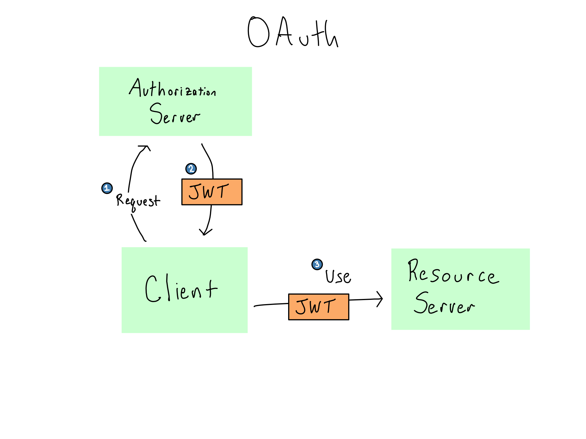

Appendix A — Auth Technologies
Chapter 16 was all about a conceptual understanding of how auth works and what SSO is. In that chapter, we briefly mentioned a few technologies used to do auth, including LDAP/AD, SAML, and OIDC/OAuth2.0.
In this appendix chapter we’ll get a little deeper into these technologies. Having a basic understanding of these technologies can be helpful when you’re talking to IT/Admins. That said, it’s definitely beyond the scope of most people’s need to understand, which is why this is an appendix.
In terms of auth technologies, there are two big distinctions. The first is between “token-based” systems that can do SSO and others that that cannot. There is also a distinction between modern systems that are designed to work with cloud services and legacy systems that were designed during the on-prem era.
| Auth Technology | Token-Based? | “Modern”? |
|---|---|---|
| Service-based | ❌ | ❌ |
| Linux Accounts | ❌1 | ❌ |
| LDAP/AD | ❌ | ❌ |
| Kerberos | ✅ | ❌ |
| SAML | ✅ | ✅ |
| OAuth | ✅ | ✅ |
These days, token-based systems are very much preferred for security reasons. Users only ever provide credentials to a centralized identity provider and the rest of the process is just trading one secure token for another.
The other benefit of token auth is session expiration. In most systems, you don’t have to re-authenticate every single time you access it. In a credential-based system, that means that you usually trade your credentials for a browser cookie issued by the service, which the service then looks for and lets you skip logging in again. Generally, the cookie won’t be reissued until it expires and you have to log in again. So these cookies generally have pretty long lifetimes. That means that if someone unauthorized were to get a cookie, they could have access for a long time. And if someone gets removed from the system, that won’t actually take effect until the cookie expires.
In contrast, tokens expiration is centrally-managed. Every time a token expires, the identity provider is consulted to see if the user should be allowed to get a new one. This can happen without the user needing to login again, allowing token lifetimes to be very short. That drastically limits the potential of someone unauthorized getting a token. While it’s bad for someone to ever get unauthorized access, having it for only an hour is way less bad than having it for days or weeks. Additionally, if you need to remove someone from the system, you know that they’ll be completely locked out as soon as their token expires.
A.1 Service-based auth
Many pieces of software come with integrated authentication. When you use those systems, the service stores encrypted username and password pairs in a database it owns. These setups are often really easy from an admin perspective – you just set up individual users on the service.
On the other hand, everything has to be managed service-by-service and you’re only as secure as what the service has implemented. Almost any organization with an IT/Admin group will prefer not to use service-based auth.
A.2 System (Linux) Accounts
Many pieces of software – especially data science workbenches – are able to look at the server they’re sitting on and use the user accounts and groups from the server themselves.
On a Linux server, Pluggable Authentication Modules (PAM) is the system that allows a service to make use of the Linux host’s users and groups. As of this writing, PAM is the default authentication method for both RStudio Server and JupyterHub.
As the name might suggest, PAM includes a number of different modules that allow it to authenticate against different systems. The most common is to authenticate against the underlying Linux server, but it can also use LDAP/AD or Kerberos tickets (uncommon).
PAM can also be used to do things when users login – the most common being initializing Kerberos tickets to connect with databases.
When PAM is used in concert with LDAP/AD, the Linux users are usually created automatically on the system using a system called SSSD (System Security Services Daemon). This process is called joining the domain.
Though conceptually simple, reading, writing, and managing PAM modules is quite painful. Additionally, as more services move to the cloud, there isn’t necessarily an underlying Linux host where identities live and PAM is generally considered a legacy technology.
A.3 LDAP/AD
For many years, Microsoft’s Lightweight Directory Access Protocol (LDAP) implementation called Active Directory (AD) was basically the standard in enterprise authentication. It is increasingly being retired in favor of token-based systems like SAML and OAuth2.0.
Depending on the service, it may use LDAP/AD indirectly via PAM, or it may be directly configured to talk to LDAP/AD.
LDAP is an application-layer protocol, like HTTP. And like HTTP, there is an SSL-secured version called LDAPS. Because LDAP is almost always used only inside a private network, adoption of LDAPS is uneven. The default port for LDAP is \(389\) and for LDAPS it’s \(636\).
LDAP/AD actually isn’t a type of authentication. It’s a hierarchical tree database that is good for storing organizational entities. Doing authentication with LDAP/AD consists of sending a search for the provided username/password combination to the LDAP/AD database using the ldapsearch command.
When you configure LDAP/AD in an application, you’ll configure a search base, which is the subtree to look for users inside. Additionally, you may configure LDAP/AD with bind credentials to validate that it’s allowed to be looking things up in the server.
Depending on your application and LDAP/AD configuration, it may be possible to skip the bind credentials and use the user’s credentials to look them up in single-bind mode (as opposed to double-bind when there are bind credentials). Single-bind is generally inferior and shouldn’t be used unless you can’t get bind credentials.
When you run an ldapsearch, you get back the distinguished name (DN) of the entity that you are looking for (assuming it’s found).
Here’s what my entry in a corporate LDAP directory might look like this:
cn: Alex Gold
mail: alex.gold@example.com
mail: alex.gold@example.org
department: solutions
mobile: 555-555-5555
objectClass: PersonThis is helpful information, but you’ll note that there’s no direct information about authorization. Instead, you configure the service authorize certain users or groups. This is a pain, as each service needs to be configured separately.
One of the big issues with LDAP/AD is that credentials are provided to the service, which passes them along to the LDAP/AD server. This is one reason why LDAP/AD is inferior to token-based technologies, where the credentials are only ever provided to the identity provider.
A.4 Kerberos Tickets
Kerberos is a relatively old, but very secure, token-based auth technology for use inside a private network. In Kerberos, encrypted tokens called Kerberos tickets are passed between the servers in the system. A system that is designed to authenticate against a Kerberos ticket is called kerberized.2
Though Kerberos is freely available, it was widely adopted along with Active Directory, and it’s used almost exclusively in places that are running a lot of Microsoft products. The most frequent use of Kerberos tickets these days is to establish connections to Microsoft databases.
Kerberos is tightly linked to the underlying servers, one of the reasons why it is so secure. In a Kerberos-based system, users often store their credentials in a secure file called a keytab. They can manually initialize a ticket using the kinit command, though PAM sessions are often used to automatically fetch a ticket upon user login.
When a Kerberos session is initialized, the service sends the users’ credentials off to the central Kerberos Domain Controller (KDC) and requests something called the Ticket Granting Ticket (TGT) from the KDC. Like most token authentication, TGTs have a set expiration period and must be reacquired when they expire.
When the user wants to access a service, they send the TGT back to the KDC again along with the service they’re trying to access and get a session key (sometimes referred to as a service ticket) that allows access to a particular service.

Kerberos is basically only used inside a corporate network. This is one reason it’s still considered secure. On the other hand, because everything has to live inside the network, it doesn’t work well for providing access to services outside the network, like SaaS software. For that reason, Kerberos is considered a legacy tool.
A.5 Modern systems: OAuth + SAML
These days, most organizations are quickly moving towards implementing a modern token-based authentication system through SAML and/or OAuth2.0.
When you go to login to a service that uses SAML or OAuth, you are redirected to the SAML/OAuth identity provider to seek a token that will let you in. Assuming all goes well, you’re granted a token and go back to the service to go do your work.
Both OAuth and SAML rely on plain HTTP traffic, making them easier to configure than LDAP/AD or Kerberos from a networking standpoint.
A.5.1 SAML
The current SAML 2.0 standard was finalized in 2005 – roughly coinciding with the beginning of the modern era of the web. Facebook was started just the prior year.
SAML was invented to be a modern successor to enterprise auth methods like LDAP/AD and Kerberos. SAML uses encrypted and cryptographically-signed XML-based tokens that are generated through a browser redirect flow.
In SAML, the service you’re accessing is called the service provider (SP) and the entity issuing the token is called the SAML identity provider (IdP). Most SAML tooling allows you start at either the IdP or the SP.
If you start at the SP, you’ll get redirected to the IdP. The IdP will verify your credentials. If all is good, it will put a SAML token in your browser, which the SP will use to authenticate you.3

A SAML token contains a number of claims, which usually include a username and may include groups or other attributes. Whoever controls the IdP can configure what claims appear on the token at the IdP. The SAML standard itself doesn’t do authorization, but it’s very common for an application to have required or optional claims that it can interpret to do authorization.
A.5.2 OAuth
OAuth was started in 2006 and the current 2.0 standard was finalized in 2013. OAuth 2.1 is under development as of 2023.
From the very beginning, OAuth was designed to be used with different services across the web. Any time you’ve used a Login with Google/Facebook/Twitter/GitHub flow – that’s OAuth.
OAuth relies on passing around cryptographically-signed JSON Web Tokens (JWT). This makes OAuth much easier to debug compared to SAML because the JWT is just plain-text JSON with a signature that proves it’s valid.
Unlike a SAML token that always lives in a browser cache, JWTs can go basically anywhere. They can live in the browser, but they also can pass from one server to another to do authorization or can be saved in a user’s home directory. For example, if you’ve accessed Google Sheets or another Google service from R or Python, you may have manually handled the resulting OAuth token in your home directory.
OAuth is actually an authorization scheme, so the contents of a JWT explicitly are about the permissions of the bearer of the token. There is a related standard called OpenID Connect (OIDC) that does authentication with OAuth tokens. Over the next few years, I fully expect basically all data access to move towards using OAuth tokens.
In OAuth, the service you’re trying to visit is called the resource server and the token issuer is the authorization server. When you try to access a service, the service knows to look for a JWT that includes specific claims against a set of scopes defined ahead of time.
For example, if you want to read my Google Calendar, you would need to have a JWT that includes a claim granting read access against the scope of events on Alex’s calendar.
If you don’t have that token, you’ll need to go to the authorization server to get it. Unlike in SAML where action is all occurring via HTTP redirects, OAuth makes no assumptions about how this flow happens.

The authorization server knows how to accept requests for a token and the resource server knows how to accept them. The process of requesting and getting a token can happen in a number of different ways that might include browser redirects and caches, but also could be done entirely in R or Python.
A.6 User Provisioning
When you’re using a service, users often need to be created (provisioned) in that system. In some cases, the users will be provisioned the first time they log in. In other cases, you may want the ability to provision them ahead of time.
LDAP/AD is very good for user provisioning. You can often configure your application to provision everyone who comes back from a particular ldapsearch. In contrast, token-based systems don’t know anything about you until you show up for the first time with a valid token.
There is a SAML-based provisioning system called SCIM (System for Cross-Domain Identity Management) that is slowly being adopted by many IdPs and SPs.
To be precise, possible if integrated with Kerberos, but unlikely.↩︎
Yuck, what a gross word.↩︎
The diagram below assumes you don’t already have a token in your browser. What’s listed as step 6 below actually occurs as soon as the user goes to the SP. If the user has a token already, they skip the rest of the flow.↩︎